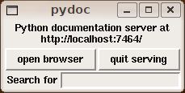
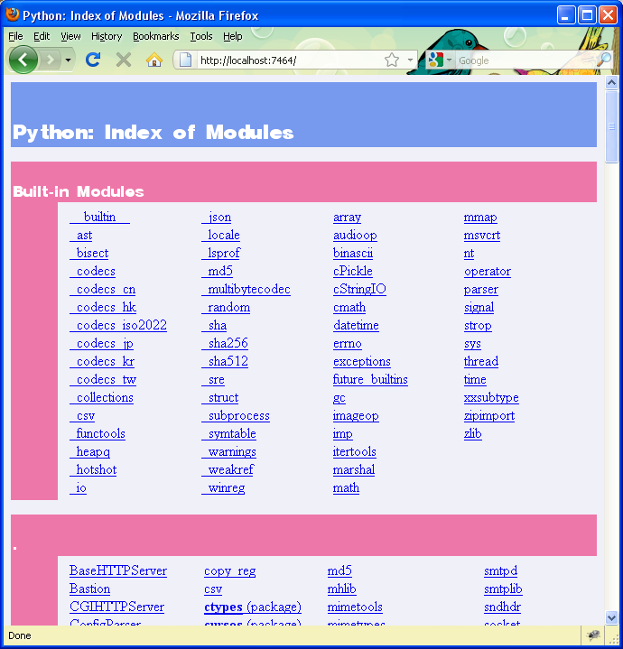
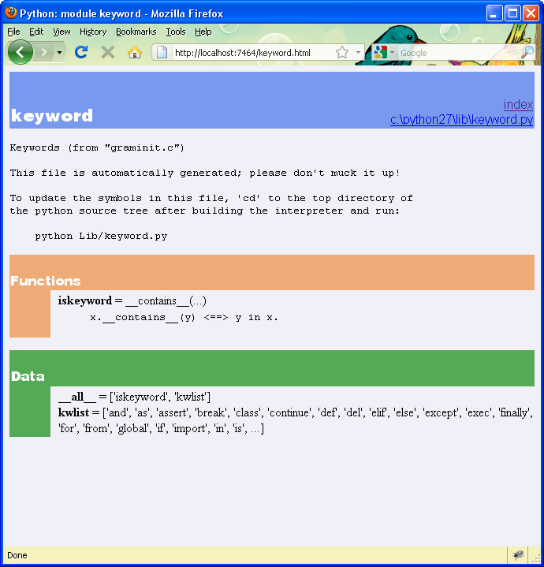

Модуль - это файл, содержащий код на языке Python и предназначенный для использования другими программами на Python. В составе стандартной библиотеки есть много модулей. Два из них, doctest и string, уже нам знакомы.
Команда pydoc позволяет строить и просматривать документацию по библиотекам Python, установленным на вашем компьютере. В командной строке операционной системы введите:
$ pydoc -g
Если вы работаете в Windows и в ответ на введенную команду получили сообщение о том, что файл не найден, попробуйте запустить pydoc, указав полный путь к нему. Скрипт pydoc находится в поддиректории lib директории, в которой установлен Python. Например, если Python установлен в C:\Python27, то полный путь к pydoc будет C:\Python27\lib\pydoc.py.
Запустив pydoc с ключом -g вы увидите следующее:
(См. упражнение 2, если возникла ошибка.)
Нажмите на кнопку ‘open browser’ для открытия окна браузера с документацией, сгенерированной pydoc:
Вы видите перечень всех библиотек Python, которые интерпретатор Python нашел на вашем компьютере. Щелкнув мышкой по имени модуля, вы получите страницу с документацией для этого модуля. Например, щелчок по keyword открывает следующую страницу:
Документация для большинства модулей содержит три раздела, выделенных разными цветами:
Классы мы обсудим в других главах, а пока будем использовать pydoc, чтобы смотреть функции и данные, содержащиеся в модулях.
Модуль keyword содержит единственную функцию iskeyword, которая, как видно из ее имени, возвращает True, если переданная ей строка является ключевым словом:
>>> from keyword import *
>>> iskeyword('for')
True
>>> iskeyword('all')
False
>>>
Список kwlist содержит все ключевые слова Python:
>>> from keyword import *
>>> print kwlist
['and', 'as', 'assert', 'break', 'class', 'continue', 'def', 'del', 'elif',
'else', 'except', 'exec', 'finally', 'for', 'from', 'global', 'if', 'import',
'in', 'is', 'lambda', 'not', 'or', 'pass', 'print', 'raise', 'return', 'try',
'while', 'with', 'yield']
>>>
Исследуйте с помощью pydoc библиотеки Python. Там столько настоящих сокровищ!
Все, что нужно для создания модуля - это текстовый файл, имя которого имеет расширение .py:
# seqtools.py
#
def remove_at(pos, seq):
return seq[:pos] + seq[pos+1:]
Этот модуль можно использовать как в скриптах, так и в интерактивном режиме Python. Для этого вначале нужно импортировать модуль. Есть два способа сделать это. Первый:
>>> from seqtools import remove_at
>>> s = "A string!"
>>> remove_at(4, s)
'A sting!'
Второй:
>>> import seqtools
>>> s = "A string!"
>>> seqtools.remove_at(4, s)
'A sting!'
В первом примере remove_at вызывается точно так же, как и функции, которые мы вызывали раньше. Во втором примере, имени функции предшествуют имя модуля и точка.
Заметьте, что ни в первом, ни во втором случае мы не указываем расширение файла .py, когда импортируем модуль. Python ожидает, что имена файлов модулей Python имеют расширение .py, так что оно не включается в предложение import.
Использование модулей позволяет разбивать очень большие программы на относительно небольшие части, с которыми удобно работать. При этом в каждый модуль помещается код, имеющий тесные связи, а связи между модулями стараются свести к минимуму.
Пространство имен представляет собой синтаксический контейнер, который позволяет использовать одно и то же имя в разных модулях или функциях (а также, как мы скоро увидим, в классах и методах).
Каждый модуль определяет свое собственное пространство имен. Поэтому одно и то же имя можно использовать в разных модулях, не вызывая конфликта:
# module1.py
question = "What is the meaning of life, the Universe, and everything?"
answer = 42
# module2.py
question = "What is your quest?"
answer = "To seek the holy grail."
Можно импортировать оба модуля и поработать с question и answer в каждом из них:
>>> import module1
>>> import module2
>>> print module1.question
What is the meaning of life, the Universe, and everything?
>>> print module2.question
What is your quest?
>>> print module1.answer
42
>>> print module2.answer
To seek the holy grail.
>>>
Но если бы мы использовали предложения from module1 import * и from module2 import *, то получили бы конфликт имен и не смогли бы добраться до question и answer из модуля module1.
Функции также определяют свои собственные пространства имен:
def f():
n = 7
print "printing n inside of f: %d" % n
def g():
n = 42
print "printing n inside of g: %d" % n
n = 11
print "printing n before calling f: %d" % n
f()
print "printing n after calling f: %d" % n
g()
print "printing n after calling g: %d" % n
Эта программа выведет следующее:
printing n before calling f: 11
printing n inside of f: 7
printing n after calling f: 11
printing n inside of g: 42
printing n after calling g: 11
Три переменных n здесь не конфликтуют друг с другом, поскольку каждая находится в своем пространстве имен.
Пространства имен позволяют нескольким программистам работать над одним проектом, избегая конфликтов имен.
Переменные, определенные внутри модуля, называются атрибутами модуля. Для доступа к ним используется оператор точка .. Одноименные атрибуты question модулей module1 и module2 записываются как module1.question и module2.question.
Модули содержат не только переменные, но и функции, и обращение к ним также записывается с помощью оператора точка. seqtools.remove_at указывает на функцию remove_at в модуле seqtools.
Ранее мы познакомились с функцией find из модуля string. Модуль string содержит много других полезных функций:
>>> import string
>>> string.capitalize('maryland')
'Maryland'
>>> string.capwords("what's all this, then, amen?")
"What's All This, Then, Amen?"
>>> string.center('How to Center Text Using Python', 70)
' How to Center Text Using Python '
>>> string.upper('angola')
'ANGOLA'
>>>
Просмотрите документацию по другим функциям и переменным модуля string с помощью pydoc.
Чем дальше развивался язык Python, тем больше функций из модуля string реализовывались как методы строковых объектов. Метод работает как функция, но вызывается немного по-другому:
>>> 'maryland'.capitalize()
'Maryland'
>>> "what's all this, then, amen?".title()
"What'S All This, Then, Amen?"
>>> 'How to Center Text Using Python'.center(70)
' How to Center Text Using Python '
>>> 'angola'.upper()
'ANGOLA'
>>>
Строковые методы встроены в строковые объекты и вызываются с помощью точки и имени метода после имени объекта.
В последующих главах мы научимся создавать наши собственные объекты с методами. А пока будем использовать методы встроенных объектов Python.
Аналогично вызываются методы списочного объекта:
>>> mylist = []
>>> mylist.append(5)
>>> mylist.append(27)
>>> mylist.append(3)
>>> mylist.append(12)
>>> mylist
[5, 27, 3, 12]
>>>
Метод append добавляет переданный ему аргумент в конец списка. Попробуем еще несколько списочных методов:
>>> mylist.insert(1, 12)
>>> mylist
[5, 12, 27, 3, 12]
>>> mylist.count(12)
2
>>> mylist.extend([5, 9, 5, 11])
>>> mylist
[5, 12, 27, 3, 12, 5, 9, 5, 11])
>>> mylist.index(9)
6
>>> mylist.count(5)
3
>>> mylist.reverse()
>>> mylist
[11, 5, 9, 5, 12, 3, 27, 12, 5]
>>> mylist.sort()
>>> mylist
[3, 5, 5, 5, 9, 11, 12, 12, 27]
>>> mylist.remove(12)
>>> mylist
[3, 5, 5, 5, 9, 11, 12, 27]
>>>
Поэкспериментируйте с методами из этого примера, пока не почувствуете, что понимаете, как они работают.
Во время выполнения программы ее данные хранятся в оперативной памяти компьютера. Оперативная память быстрая и недорогая, однако она непостоянна. Это значит, что после завершения программы или выключения компьютера данные исчезают. Чтобы данные не исчезали и были доступны в следующий раз, когда вы включите компьютер и запустите программу, нужно записать их на носитель данных с постоянной памятью, такой, как жесткий диск, флешка или CD-RW.
Данные на носителе хранятся в файлах - именованных участках памяти носителя. Читая и записывая файлы, программы могут сохранять информацию между запусками.
Работа с файлами похожа на работу с записной книжкой. Для того, чтобы воспользоваться записной книжкой, вам нужно ее открыть. Когда вы закончили, то закрываете ее. Пока записная книжка открыта, можно как писать в нее, так и читать, и вы всегда знаете, в каком месте записной книжки вы находитесь. Вы можете прочитать записную книжку от начала до конца в естественном порядке, или можете перепрыгивать со страницы на страницу.
Все это применимо к файлам. Чтобы открыть файл, вы указываете его имя и то, хотите ли вы читать или писать.
Открытие файла создает файловый объект. В следующем примере переменная myfile связывается с новым файловым объектом.
>>> myfile = open('test.dat', 'w')
>>> print myfile
<open file 'test.dat', mode 'w' at 0x2aaaaab80cd8>
Функция open принимает два аргумента. Первый - имя файла, второй - режим работы с файлом. Режим 'w' (англ.: write - писать) означает, что файл открывается для записи.
Если файла с именем test.dat не существует, он будет создан. Если такой файл уже есть, его содержимое будет заменено на то, что мы будем писать в него.
Когда мы выводим файловый объект с помощью print, то видим имя файла и режим.
Данные помещаются в файл с помощью метода write файлового объекта:
>>> myfile.write("Now is the time")
>>> myfile.write("to close the file")
Закрытие файла сообщает системе о том, что мы закончили писать в файл, и делает файл доступным для чтения:
>>> myfile.close()
Теперь мы можем снова открыть файл, на этот раз для чтения, и прочитать содержимое файла в строку. На этот раз, аргумент mode будет 'r' (англ.: read - читать):
>>> myfile = open('test.dat', 'r')
Если мы попробуем открыть несуществующий файл, то получим ошибку:
>>> myfile = open('test.cat', 'r')
IOError: [Errno 2] No such file or directory: 'test.cat'
Для чтения из файла предназначен метод read. Вызванный без аргументов, он читает все содержимое файла и помещает его в один строковый объект:
>>> text = myfile.read()
>>> print text
Now is the timeto close the file
Между ‘time’ и ‘to’ нет пробела, так как мы не записали пробел.
Метод read может принимать аргумент, показывающий, сколько символов нужно прочитать из файла:
>>> myfile = open('test.dat', 'r')
>>> print myfile.read(5)
Now i
Если в файле осталось меньше символов, чем задано для чтения, read прочитает все, что осталось. Когда будет достигнут конец файла, read вернет пустую строку:
>>> print myfile.read(1000006)
s the timeto close the file
>>> print myfile.read()
>>>
Следующая функция копирует файл, прочитывая и записывая по 50 символов за раз. Ее первый параметр - имя оригинального файла, второй - имя нового файла:
def copy_file(oldfile, newfile):
infile = open(oldfile, 'r')
outfile = open(newfile, 'w')
while True:
text = infile.read(50)
if text == "":
break
outfile.write(text)
infile.close()
outfile.close()
return
В этой функции в цикле читаются 50 символов из infile и записываются в outfile до тех пор, пока не будет достигнут конец файла infile. По достижении конца файла значением text будет пустая строка и выполнится break.
Текстовый файл - это файл, содержащий только печатные и пробельные символы, организованные в строки, разделенные символом перевода строки. Поскольку Python был спроектирован специально для обработки текстовых файлов, он предоставляет отличные средства для такой работы.
Создадим файл с тремя строками текста, разделенными переводом строки:
>>> outfile = open("test.dat","w")
>>> outfile.write("line one\nline two\nline three\n")
>>> outfile.close()
Метод readline читает все символы до символа перевода строки, включительно:
>>> infile = open("test.dat","r")
>>> print infile.readline()
line one
>>>
Метод readlines читает все оставшиеся строки из файла и помещает их в список строк:
>>> print infile.readlines()
['line two\012', 'line three\012']
В данном случае вывод делается в списочном формате, вот почему строковые значения заключены в кавычки и символы перевода строки представлены в виде управляющих последовательностей \\012.
Если достигнут конец файла, то readline вернет пустую строку, а readlines - пустой список:
>>> print infile.readline()
>>> print infile.readlines()
[]
Приведем пример программы для обработки строк. Функция filter делает копию файла oldfile, исключая строки, которые начинаются с #:
def filter(oldfile, newfile):
infile = open(oldfile, 'r')
outfile = open(newfile, 'w')
while True:
text = infile.readline()
if text == "":
break
if text[0] == '#':
continue
outfile.write(text)
infile.close()
outfile.close()
return
Предложение continue завершает текущую итерацию цикла, но цикл продолжает выполняться. Поток выполнения продолжится с заголовка цикла, то есть, будет проверено условие и далее выполнение продолжится в соответствии с результатом проверки.
Таким образом, если text будет пустой строкой, то цикл завершится. Если первый символ text будет решетка, то выполнение перейдет к заголовку цикла. И только если оба эти условия не выполнятся, text будет записан в новый файл.
Многочисленные файлы для хранения в постоянной памяти организуются по правилам, известным как файловая система. Файловые системы имеют дело с файлами и каталогами. Последние могут содержать файлы и другие каталоги. (Иногда каталоги называют директориями.)
Когда ваш скрипт создает новый файл, этот файл создается в текущем каталоге — в том, в котором вы находились, когда запустили скрипт. Также, когда скрипт открывает файл для чтения, Python ищет его в текущем каталоге.
Если вы хотите открыть файл из другого каталога, вам придется указать путь к файлу, который содержит как имя каталога, так и имя файла:
>>> wordsfile = open('/usr/share/dict/words', 'r')
>>> wordlist = wordsfile.readlines()
>>> print wordlist[:6]
['\n', 'A\n', "A's\n", 'AOL\n', "AOL's\n", 'Aachen\n']
В этом примере открывается файл words, находящийся в каталоге dict, находящемся в share, находящемся в usr, находящемся в каталоге верхнего уровня /. Затем программа читает строки файла в список с помощью readlines, и выводит первые 5 элементов списка.
Нельзя использовать символ / как часть имени файла; он зарезервирован для разделения имен каталогов и файла.
Файл /usr/share/dict/words существует в системах, основанных на Unix, и содержит список слов в алфавитном порядке.
Функция ord возвращает целочисленный код символа:
>>> ord('a')
97
>>> ord('A')
65
>>>
Этот пример объясняет, почему выражение 'Apple' < 'apple' дает True.
Функция chr противоположна функции ord. Она принимает целочисленный аргумент и возвращает его символьное представление:
>>> for i in range(65, 71):
... print chr(i)
...
A
B
C
D
E
F
>>>
Следующая программа, countletters.py, подсчитывает, сколько раз встречается каждая буква в книге Алиса в стране чудес:
#
# countletters.py
#
def display(i):
if i == 10: return 'LF'
if i == 13: return 'CR'
if i == 32: return 'SPACE'
return chr(i)
infile = open('alice_in_wonderland.txt', 'r')
text = infile.read()
infile.close()
counts = 128 * [0]
for letter in text:
counts[ord(letter)] += 1
outfile = open('alice_counts.dat', 'w')
outfile.write("%-12s%s\n" % ("Character", "Count"))
outfile.write("=================\n")
for i in range(len(counts)):
if counts[i]:
outfile.write("%-12s%d\n" % (display(i), counts[i]))
outfile.close()
Запустите эту программу и посмотрите созданный ей файл с помощью текстового редактора. В упражнении ниже вам нужно будет проанализировать эту программу.
Модуль sys содержит функции и переменные для доступа к среде, в которой выполняется интерпретатор Python.
Следующий пример показывает значения некоторых из этих переменных на компьютере c Linux:
>>> import sys
>>> sys.platform
'linux2'
>>> sys.path
['', '/home/jelkner/lib/python', '/usr/lib/python25.zip', '/usr/lib/python2.5',
'/usr/lib/python2.5/plat-linux2', '/usr/lib/python2.5/lib-tk',
'/usr/lib/python2.5/lib-dynload', '/usr/local/lib/python2.5/site-packages',
'/usr/lib/python2.5/site-packages', '/usr/lib/python2.5/site-packages/Numeric',
'/usr/lib/python2.5/site-packages/gst-0.10',
'/var/lib/python-support/python2.5', '/usr/lib/python2.5/site-packages/gtk-2.0',
'/var/lib/python-support/python2.5/gtk-2.0']
>>> sys.version
'2.5.1 (r251:54863, Mar 7 2008, 04:10:12) \n[GCC 4.1.3 20070929 (prerelease)
(Ubuntu 4.1.2-16ubuntu2)]'
>>>
На компьютере с Windows можем увидеть такую картину:
>>> import sys
>>> sys.platform
'win32'
>>> sys.path
['', 'C:\\WINDOWS\\system32\\python27.zip', 'C:\\Python27\\DLLs',
'C:\\Python27\\lib', 'C:\\Python27\\lib\\plat-win', 'C:\\Python27\\lib\\lib-tk',
'C:\\Python27', 'C:\\Python27\\lib\\site-packages']
>>> sys.version
'2.7.3 (default, Apr 10 2012, 23:31:26) [MSC v.1500 32 bit (Intel)]'
>>>
На вашей машине результаты, конечно, будут отличаться.
Переменная argv содержит список аргументов, считанных из командной строки, которой был запущен скрипт. Аргументы командной строки можно использовать для передачи информации в программу во время ее запуска.
#
# demo_argv.py
#
import sys
print sys.argv
Запуск этой программы в командной строке Unix демонстрирует, как работает sys.argv:
$ python demo_argv.py this and that 1 2 3
['demo_argv.py', 'this', 'and', 'that', '1', '2', '3']
$
argv есть список строковых объектов. Заметьте, что первый элемент списка - имя файла программы. Аргументы, разделенные пробелами в командной строке, попадают в список, как будто обработанные методом string.split. Если вы хотите передать аргумент, содержащий пробел, заключите аргумент в кавычки:
$ python demo_argv.py "this and" that "1 2" 3
['demo_argv.py', 'this and', 'that', '1 2', '3']
$
Пользуясь argv, можно писать полезные программы, которые получают ввод прямо из командной строки. Например, вот программа, которая подсчитывает сумму последовательности чисел:
#
# sum.py
#
from sys import argv
nums = argv[1:]
for index, value in enumerate(nums):
nums[index] = float(value)
print sum(nums)
В этой программе мы воспользовались способом импорта from <module> import <attribute>, поэтому имя argv оказалось в пространстве имен программы.
Теперь можно запускать программу в командной строке так:
$ python sum.py 3 4 5 11
23
$ python sum.py 3.5 5 11 100
119.5
В качестве упражнения вам полезно будет написать собственные программы, похожие на эту.
Предложение, которое делает содержащиеся в модуле объекты доступными для использования в программе. Имеются две формы предложения import.
Следующий пример для гипотетического модуля mymod, содержащего функции f1 и f2, а также переменные v1 и v2, иллюстрирует использование обеих форм:
import mymod
Это первая форма.
from mymod import f1, f2, v1, v2
Импорт перечисленных объектов.
Ситуация, когда два или более объекта получают одинаковые имена в одном и том же пространстве имен. Использование
import string
вместо
from string import *
предотвращает конфликты имен.
Атрибут функционального типа у класса или объекта. Методы вызываются для объекта с помощью оператора точка. Например:
>>> s = "this is a string."
>>> s.upper()
'THIS IS A STRING.'
>>>
В таком случае говорят, что метод upper вызван для строки s. s неявно является первым аргументом для upper.
Выполните следующее:
Запустите сервер pydoc командой pydoc -g в командной строке.
Нажмите кнопку ‘open browser’ в окошке pydoc.
Найдите модуль calendar и щелкните мышкой на нем.
Просматривая раздел Functions, попробуйте выполнить следующее в режиме интерпретатора Python:
>>> import calendar
>>> year = calendar.calendar(2008)
>>> print year # What happens here?
Поэкспериментируйте с calendar.isleap. Что ожидает эта функция в качестве аргумента? Что она возвращает в качестве результата? Какого типа эта функция?
Повторите, что вы узнали из этого упражнения.
Если на вашем компьютере не установлен Tkinter, то pydoc -g вернет сообщение об ошибке, поскольку графическое окно рисуется с помощью Tkinter. Вместо этого, можно запустить web-сервер непосредственно:
$ pydoc -p 7464
Эта команда запускает сервер pydoc с портом 7464. Теперь задайте в вашем браузере адрес:
http://localhost:7464
и вы сможете просматривать документацию по библиотекам Python.
Таким способом запустите pydoc и посмотрите документацию по модулю math.
Исследуйте модуль copy с помощью pydoc. Что делает deepcopy? В каких упражнениях из предыдущей главы deepcopy пришлась бы кстати?
Создайте модуль mymodule1.py. Добавьте атрибуты myage с вашим возрастом и year с текущим годом. Создайте еще один модуль mymodule2.py. Добавьте атрибуты myage, равный 0, и year с годом вашего рождения. Теперь создайте файл namespace_test.py. Импортируйте в него оба модуля и напишите следующее предложение:
print (mymodule2.myage - mymodule1.myage) == (mymodule2.year - mymodule1.year)
При выполнении namespace_test.py вы увидите True или False, в зависимости от того, был ли уже ваш день рождения в этом году.
Добавьте следующее предложение к mymodule1.py, mymodule2.py и namespace_test.py из предыдущего упражнения:
print "My name is %s" % __name__
Выполните namespace_test.py. Что произошло? Почему? Теперь добавьте следующее в конец файла mymodule1.py:
if __name__ == '__main__':
print "This won't run if I'm imported."
Выполните mymodule1.py и namespace_test.py снова. В каком случае вы видите вывод нового предложения print?
В режиме интерпретатора Python выполните:
>>> import this
Что говорит Тим Петерс о пространствах имен?
Используя pydoc найдите и исследуйте еще три функции из модуля string.
Перепишите matrix_mult из предыдущей главы, воспользовавшись списочными методами.
Функция dir, с которой мы уже встречались, выводит список атрибутов объекта, переданного ей в качестве аргумента. Другими словами, dir возвращает содержимое пространства имен своего аргумента. С помощью dir(str) и dir(list) найдите, по крайней мере, три метода, с которыми мы до сих пор не познакомились.
Чтобы узнать побольше о заинтересовавшей вас функции, выведите ее документирующую строку. Например, для того, чтобы выяснить, как работает str.join, выполните print str.join.__doc__.
Что получится, если выполнить следующие предложения в интерактивном режиме Python:
>>> s = "If we took the bones out, it wouldn't be crunchy, would it?"
>>> s.split()
>>> type(s.split())
>>> s.split('o')
>>> s.split('i')
>>> '0'.join(s.split('o'))
Убедитесь, что вам понятны полученные результаты. После этого напишите тело функции ниже, используя методы split и join объектов str:
def myreplace(old, new, s):
"""
Replace all occurances of old with new in the string s.
>>> myreplace(',', ';', 'this, that, and, some, other, thing')
'this; that; and; some; other; thing'
>>> myreplace(' ', '**', 'Words will now be separated by stars.')
'Words**will**now**be**separated**by**stars.'
"""
Все доктесты должны успешно пройти.
Создайте модуль wordtools.py со следующим кодом в конце:
if __name__ == '__main__':
import doctest
doctest.testmod()
Объясните, почему и как этот код делает удобным как использование этого модуля, так и его тестирование. Каким будет значение __name__, когда wordtools.py импортирован в программу? Каким оно будет, если модуль запущен на выполнение напрямую? В каком случае выполняются доктесты? А теперь напишите тела каждой из следующих функций так, чтобы доктесты успешно проходили:
def cleanword(word):
"""
>>> cleanword('what?')
'what'
>>> cleanword('"now!"')
'now'
>>> cleanword('?+="word!,@$()"')
'word'
"""
def has_dashdash(s):
"""
>>> has_dashdash('distance--but')
True
>>> has_dashdash('several')
False
>>> has_dashdash('critters')
False
>>> has_dashdash('spoke--fancy')
True
>>> has_dashdash('yo-yo')
False
"""
def extract_words(s):
"""
>>> extract_words('Now is the time! "Now", is the time? Yes, now.')
['now', 'is', 'the', 'time', 'now', 'is', 'the', 'time', 'yes', 'now']
>>> extract_words('she tried to curtsey as she spoke--fancy')
['she', 'tried', 'to', 'curtsey', 'as', 'she', 'spoke', 'fancy']
"""
def wordcount(word, wordlist):
"""
>>> wordcount('now', ['now', 'is', 'time', 'is', 'now', 'is', 'is'])
['now', 2]
>>> wordcount('is', ['now', 'is', 'time', 'is', 'now', 'is', 'the', 'is'])
['is', 4]
>>> wordcount('time', ['now', 'is', 'time', 'is', 'now', 'is', 'is'])
['time', 1]
>>> wordcount('frog', ['now', 'is', 'time', 'is', 'now', 'is', 'is'])
['frog', 0]
"""
def wordset(wordlist):
"""
>>> wordset(['now', 'is', 'time', 'is', 'now', 'is', 'is'])
['is', 'now', 'time']
>>> wordset(['I', 'a', 'a', 'is', 'a', 'is', 'I', 'am'])
['I', 'a', 'am', 'is']
>>> wordset(['or', 'a', 'am', 'is', 'are', 'be', 'but', 'am'])
['a', 'am', 'are', 'be', 'but', 'is', 'or']
"""
def longestword(wordset):
"""
>>> longestword(['a', 'apple', 'pear', 'grape'])
5
>>> longestword(['a', 'am', 'I', 'be'])
2
>>> longestword(['this', 'that', 'supercalifragilisticexpialidocious'])
34
"""
Сохраните этот модуль так, чтобы вы могли использовать инструменты из него в ваших программах.
Файл unsorted_fruits.txt содержит список 26 фруктов, причем названия их всех начинаются с разных букв алфавита. Напишите программу sort_fruits.py, которая читает список из unsorted_fruits.txt и записывает отсортированный список в файл sorted_fruits.txt.
Ответьте на вопросы, касающиеся countletters.py:
Подробно объясните, что делают три строки:
infile = open('alice_in_wonderland.txt', 'r')
text = infile.read()
infile.close()
Как вы думаете, что покажет type(text) после выполнения этих строк?
Какой результат дает вычисление выражения 128 * [0]? Прочитайте об ASCII в Википедии и объясните, в свете того, что вы узнаете, почему переменной counts присваивается 128 * [0].
Объясните, что следующий код
for letter in text:
counts[ord(letter)] += 1
делает с counts?
Объясните назначение функции display. Почему она проверяет значения 10, 13 и 32? Что особенного в этих значениях?
Подробно объясните, что делают следующие строки:
outfile = open('alice_counts.dat', 'w')
outfile.write("%-12s%s\n" % ("Character", "Count"))
outfile.write("=================\n")
Что будет в alice_counts.dat, когда они выполнятся?
И, наконец, объясните, что делает фрагмент кода:
for i in range(len(counts)):
if counts[i]:
outfile.write("%-12s%d\n" % (display(i), counts[i]))
Каково назначение if counts[i]?
Напишите программу mean.py, которая берет последовательность чисел из командной строки и вычисляет их среднее арифметическое:
$ python mean.py 3 4
3.5
$ python mean.py 3 4 5
4.0
$ python mean.py 11 15 94.5 22
35.625
Запущенная с данными, приведенными выше, ваша программа должна дать такие же результаты.
Напишите программу median.py, которая берет последовательность чисел из командной строки и возвращает их медиану:
$ python median.py 3 7 11
7
$ python median.py 19 85 121
85
$ python median.py 11 15 16 22
15.5
Запущенная с данными, приведенными выше, ваша программа должна дать такие же результаты.
Измените программу countletters.py так, чтобы она принимала имя файла как аргумент командной строки. Как вы будете давать имя выходному файлу?